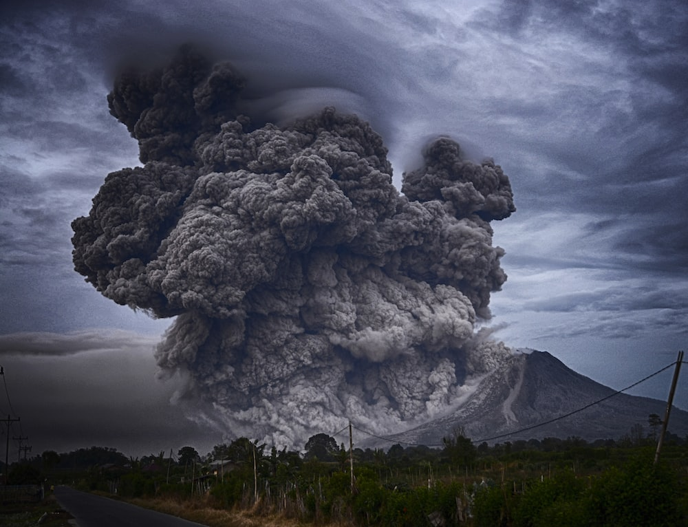
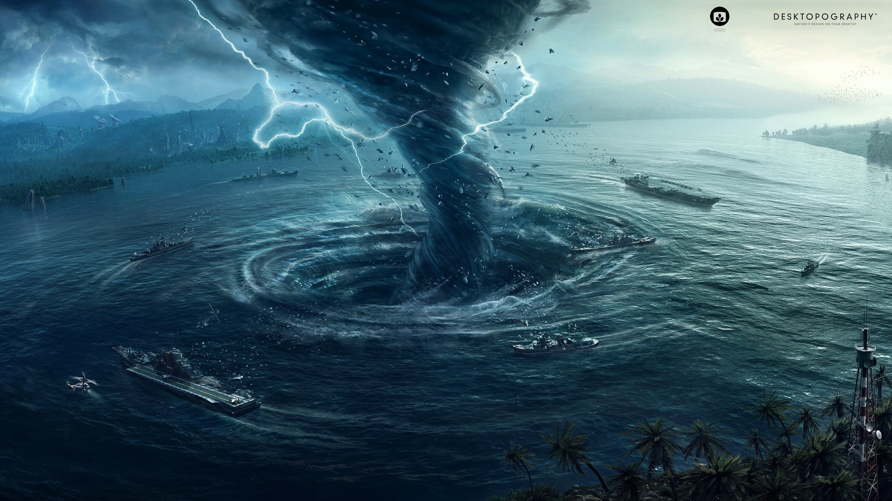
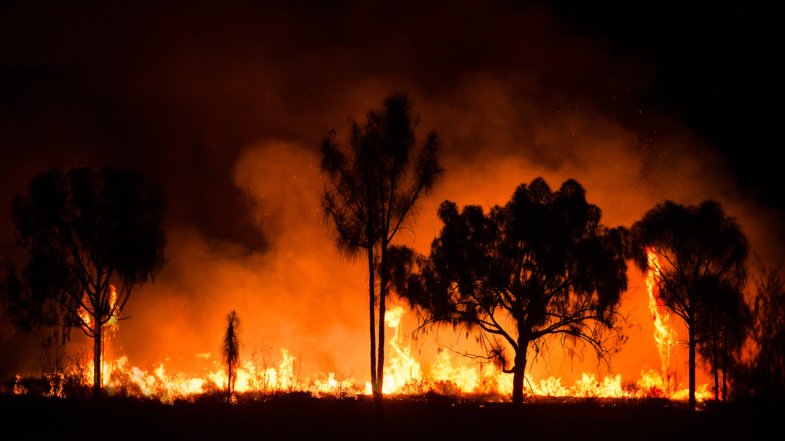
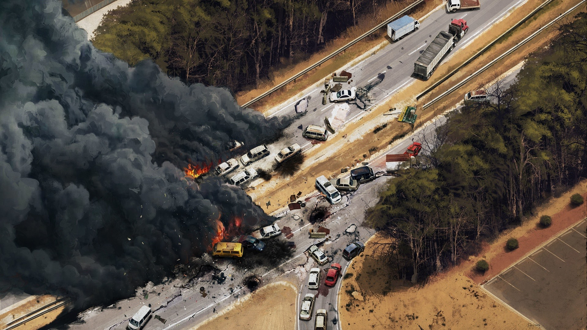
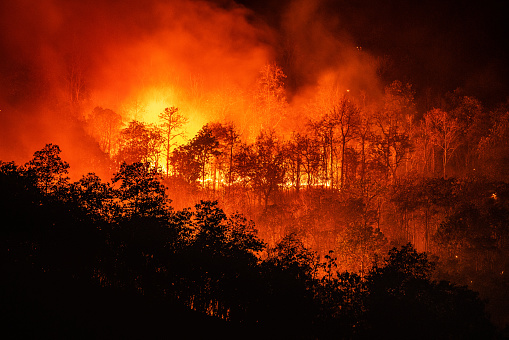

Disaster management is the process of preparing for, responding to, and recovering from natural or man-made disasters. It involves a combination of prevention, mitigation, preparedness, response, and recovery efforts. The goal of disaster management is to minimize the impact of disasters on communities and individuals, and to ensure that affected populations have the resources they need to recover and rebuild. Prevention efforts in disaster management include measures such as building codes and regulations, land use planning, and public awareness campaigns. These efforts aim to reduce the likelihood of disasters occurring in the first place, and to minimize the potential impact of disasters when they do occur. Mitigation efforts in disaster management involve measures to reduce the severity of disasters, such as retrofitting buildings to make them more resistant to earthquakes, or developing early warning systems for hurricanes. These efforts aim to reduce the impact of disasters on communities and individuals, and to reduce the overall cost of disaster response and recovery. Preparedness efforts in disaster management involve measures to ensure that communities and individuals are ready to respond to disasters when they occur. This includes developing emergency response plans, establishing emergency shelters, and training first responders and other key personnel. These efforts aim to ensure that communities are able to respond quickly and effectively to disasters, and to minimize the impact of disasters on affected populations. The response phase of disaster management involves the immediate response to a disaster, including search and rescue efforts, evacuation, and emergency medical treatment. During this phase, first responders and other key personnel work to save lives, protect property, and stabilize the situation. The recovery phase of disaster management involves the long-term effort to rebuild communities and restore normalcy after a disaster. This includes measures such as debris removal, reconstruction, and rehabilitation. The goal of the recovery phase is to ensure that affected communities have the resources they need to recover and rebuild, and to minimize the long-term impact of disasters on affected populations. Disaster management is a complex and challenging process that requires the cooperation of many different stakeholders, including government agencies, non-governmental organizations, and the private sector. Effective disaster management requires a coordinated and comprehensive approach that involves prevention, mitigation, preparedness, response, and recovery efforts. By working together, communities and governments can reduce the impact of disasters and ensure that affected populations have the resources they need to recover and rebuild.